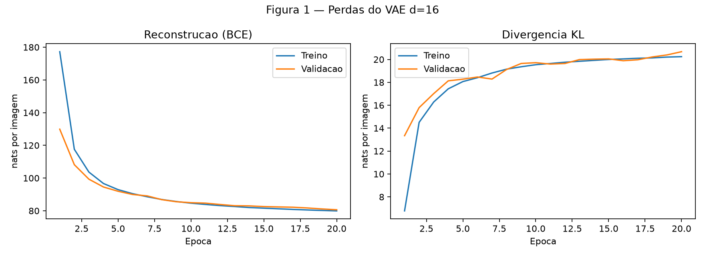
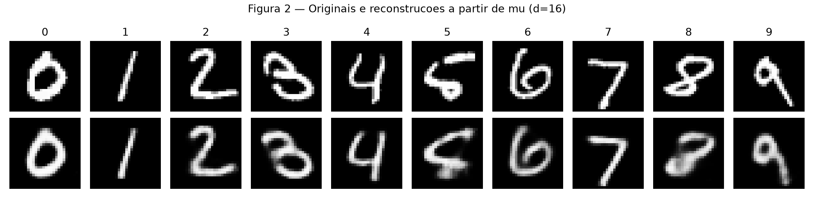
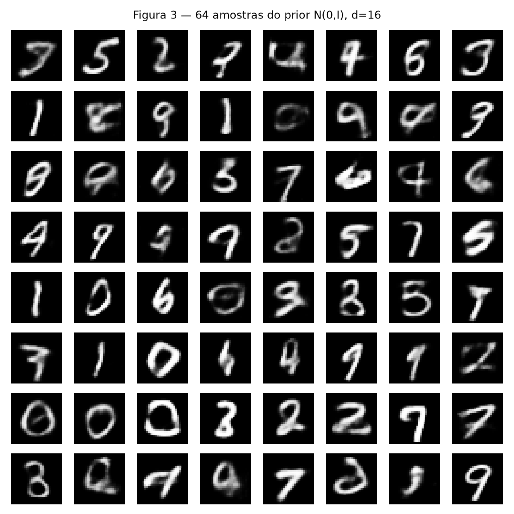
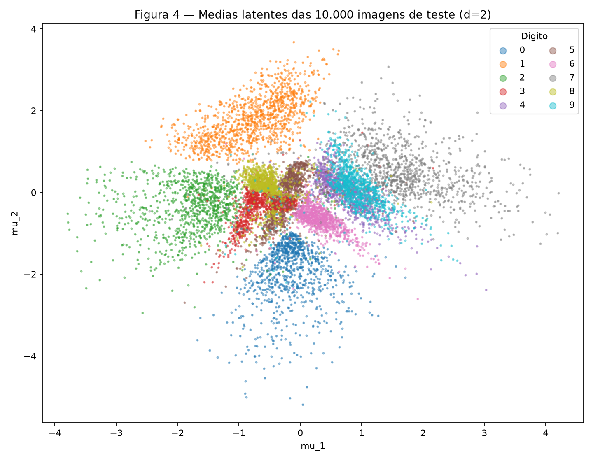
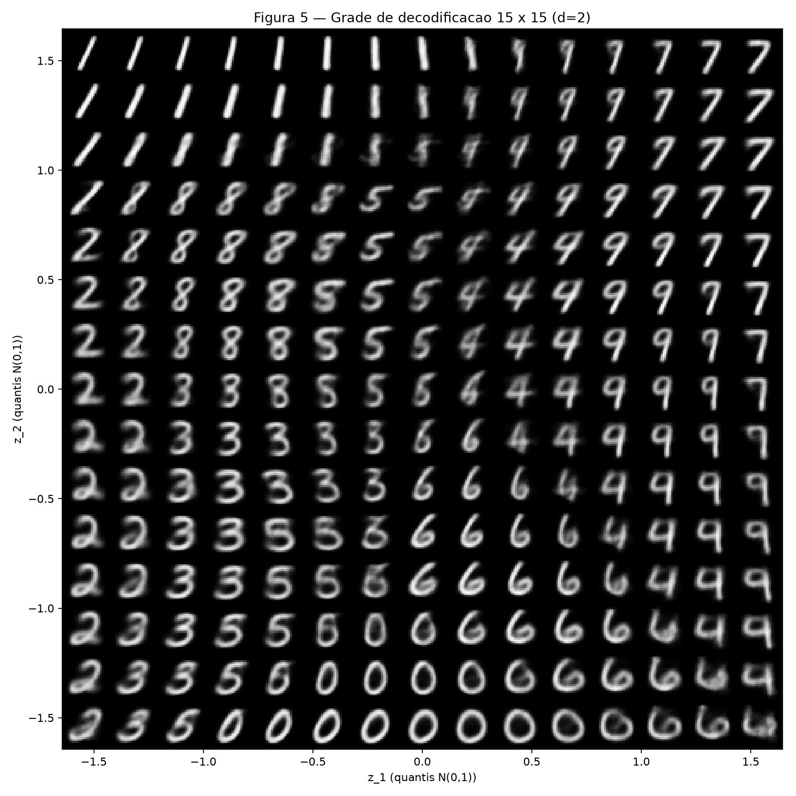
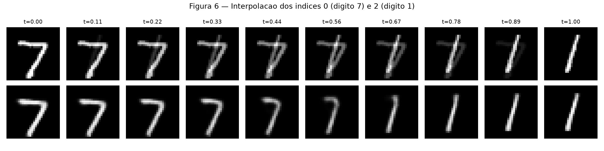

Atividade 4 — Autoencoders Variacionais (VAE)
Exercício 1
A — Carregue e divida os dados
Utilizei torchvision.datasets.MNIST, transforms.ToTensor() e vetores de 784 pixels em [0,1]. Separei os 60.000 exemplos oficiais de treino em 50.000 de treino e 10.000 de validação, usando random_split(..., generator=torch.Generator().manual_seed(42)). Reservei as 10.000 imagens oficiais de teste para a avaliação final e as visualizações solicitadas.
--8<-- "docs/exercises/vae/code/ex1a.py"B — Construa o modelo
O encoder é 784 → 512 → 256, com ReLU, e produz duas cabeças 256 → d: média μ e log-variância log σ². O decoder é d → 256 → 512 → 784, com ReLU nas camadas ocultas e sigmoid na saída. Aqui, d=16, β=1.
A reparametrização é z = μ + exp(0,5 log σ²) ε, onde ε ~ N(0,I). Calculo separadamente a BCE somada nos pixels e a KL fechada:
[ =-_{n=1}{N}_{j=1}{784}]
[ =-{n=1}{N}_{i=1}{d}(1+{ni}2-_{ni}2-_{ni}^2),=+. ]
--8<-- "docs/exercises/vae/code/ex1b.py"C — Treine
Treinei com Adam, taxa de aprendizado 0,001, batches de 128 e 20 épocas. Registrei reconstrução e KL em treino e validação, separadamente. No teste oficial, obtive BCE = 79.981, KL = 20.691 e ELBO negativo = 100.672 nats/imagem.
--8<-- "docs/exercises/vae/code/ex1c.py"
Figura 1 — Evolução da reconstrução e da KL para o VAE de dimensão latente 16.
D — Reconstruções e amostras
Na Figura 2, cada coluna traz a primeira imagem de teste de um dígito (0 a 9) e sua reconstrução obtida ao decodificar μ, sem sortear z.
--8<-- "docs/exercises/vae/code/ex1d.py"
Figura 2 — Originais (acima) e reconstruções a partir de μ (abaixo).
Na Figura 3, gero 64 amostras do prior N(0,I), em uma grade 8 × 8, depois de executar torch.manual_seed(0).

Figura 3 — Amostras novas decodificadas do prior gaussiano.
E — Análise
1. Por que a KL pode subir enquanto a perda total cai? O treinamento minimiza a soma BCE + KL. O encoder pode tornar os códigos mais informativos sobre cada imagem, reduzindo bastante a BCE, mesmo que isso afaste a posteriori aproximada do prior e aumente a KL. A troca compensa quando a queda na reconstrução é maior que o aumento na regularização. A KL de validação passou de 13.343 na primeira época para 20.674 nats/imagem na última.
2. Por que as amostras da Figura 3 podem parecer piores que as reconstruções da Figura 2? Primeiro, nem toda região do prior necessariamente corresponde a códigos onde o encoder colocou exemplos de treino: amostras aleatórias podem cair em regiões pouco representadas e gerar imagens ambíguas. Segundo, o decoder prevê probabilidades de pixels; ao representar alternativas possíveis, seus valores intermediários podem produzir imagens borradas, sobretudo quando o código não identifica claramente um dígito.
3. Por que decodificar μ na Figura 2? Para reconstruir de modo determinístico a representação central de cada entrada. Amostrar z acrescentaria ruído e dificultaria a comparação entre a imagem de entrada e sua reconstrução.
Exercício 2
A — Treine um VAE 2-D
Repeti a arquitetura, a divisão, β=1, a semente 42 e as 20 épocas; a única alteração foi d=2. Os resultados finais no teste são:
| Dimensão latente | Reconstrução (nats/imagem) | KL (nats/imagem) |
|---|---|---|
| 16 | 79.981 | 20.691 |
| 2 | 134.121 | 6.746 |
--8<-- "docs/exercises/vae/code/ex2a.py"B — O conjunto de teste codificado
A Figura 4 apresenta as médias μ das 10.000 imagens de teste, usando cores e legenda para identificar cada dígito.
--8<-- "docs/exercises/vae/code/ex2b.py"
Figura 4 — Distribuição dos dígitos no espaço das médias latentes.
C — O plano decodificado
Na Figura 5, decodifiquei uma grade 15 × 15 com coordenadas norm.ppf(q), onde q assume 15 valores igualmente espaçados entre 0,05 e 0,95.
--8<-- "docs/exercises/vae/code/ex2c.py"
Figura 5 — Imagens geradas em diferentes regiões do plano latente.
Como a transformação pela CDF leva uma normal padrão a uma uniforme, intervalos iguais de quantil correspondem a intervalos de mesma probabilidade em cada eixo (salvo as regiões externas aos quantis extremos exibidos).
D — Interpolação
Escolhi os índices de teste 0 (dígito 7) e 2 (dígito 1), que correspondem a dígitos diferentes. A Figura 6 compara dez passos lineares em pixels com dez passos entre μ_a e μ_b, decodificados pelo VAE de 16 dimensões.
--8<-- "docs/exercises/vae/code/ex2d.py"
Figura 6 — Mistura direta de pixels (linha superior) e interpolação no espaço latente de dimensão 16 (linha inferior).
E — Análise
1. Sobreposição de dígitos e transição no plano. Na Figura 4, há sobreposição entre diferentes classes, por exemplo entre os dígitos 4 e 9 na região central do espaço latente, aproximadamente para valores de μ_1 e μ_2 entre 0 e 1. Na Figura 5, na região central-direita, observam-se formas que passam gradualmente de traços semelhantes ao 4 para traços semelhantes ao 9. Algumas imagens intermediárias misturam características dos dois dígitos, dificultando a identificação de uma única classe.
2. Por que d=2 reconstrói pior? Com apenas duas dimensões latentes, o modelo precisa comprimir informações sobre a identidade dos dígitos e sobre o estilo de escrita, como curvatura, inclinação, espessura e posição dos traços. Parte dessas características é perdida ou não pode ser representada separadamente. Na Figura 5, as regiões de transição apresentam imagens com traços misturados ou borrados, evidenciando essa limitação. A reconstrução no teste foi de 134.121 nats/imagem para d=2, contra 79.981 nats/imagem para d=16, uma diferença de 54.139 nats/imagem.
3. Comparação entre as interpolações. Na Figura 6, a interpolação em pixels (linha superior) faz uma sobreposição direta das imagens dos dígitos 7 e 1. Nas etapas intermediárias, aparecem traços de ambos ao mesmo tempo, formando imagens ambíguas. Na interpolação latente (linha inferior), a transformação é mais coerente: o 7 perde gradualmente o traço superior e assume a forma do 1. Isso ocorre porque o decoder transforma representações intermediárias aprendidas em imagens com características de dígitos, enquanto a interpolação em pixels apenas mistura intensidades nas mesmas posições.
Resumo dos resultados
| # | Quantidade | Valor |
|---|---|---|
| 1 | Ex. 1 — reconstrução, KL e ELBO negativo no teste (d=16) |
79.981; 20.691; 100.672 nats/imagem |
| 2 | Ex. 1 — KL de validação na primeira e na última época | 13.343; 20.674 nats/imagem |
| 3 | Ex. 2 — reconstrução e KL no teste (d=2) |
134.121; 6.746 nats/imagem |
| 4 | Ex. 2 — os dois índices de teste interpolados | 0 e 2 |